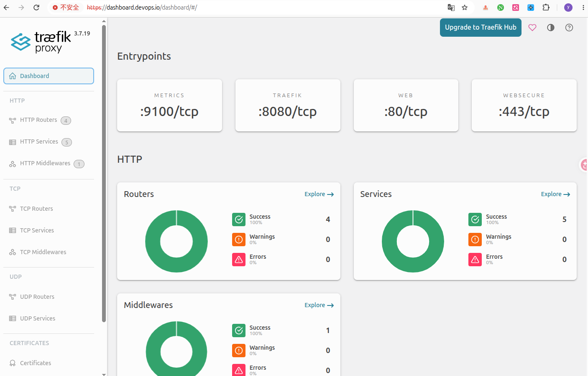

Traefik#
安装#
helm repo add traefik https://traefik.github.io/charts
helm repo update
kubectl create namespace traefik
openssl req -x509 -nodes -days 365 -newkey rsa:2048 \
-keyout tls.key -out tls.crt \
-subj "/CN=*.devops.io"
kubectl create secret tls local-selfsigned-tls \
--cert=tls.crt --key=tls.key \
--namespace traefik
wget https://github.com/kubernetes-sigs/gateway-api/releases/download/v1.6.3/standard-install.yaml
kubectl apply -f standard-install.yaml
#wget https://gh-proxy.org/https://raw.githubusercontent.com/traefik/traefik/v3.7/docs/content/reference/dynamic-configuration/kubernetes-gateway-rbac.yml
#kubectl apply -f kubernetes-gateway-rbac.yml
helm install traefik traefik/traefik -n traefik \
--set api.dashboard=true \
--set api.insecure=false \
--set ingressRoute.dashboard.enabled=true \
--set ingressRoute.dashboard.matchRule='Host(`dashboard.devops.io`)' \
--set ingressRoute.dashboard.entryPoints={websecure} \
--set providers.kubernetesIngress.enabled=false \
--set providers.kubernetesGateway.enabled=true \
--set gateway.listeners.web.port=80 \
--set gateway.listeners.web.protocol=HTTP \
--set gateway.listeners.web.namespacePolicy.from=All \
--set gateway.listeners.websecure.port=443 \
--set gateway.listeners.websecure.protocol=HTTPS \
--set gateway.listeners.websecure.namespacePolicy.from=All \
--set gateway.listeners.websecure.mode=Terminate \
--set gateway.listeners.websecure.certificateRefs[0].kind=Secret \
--set gateway.listeners.websecure.certificateRefs[0].name=local-selfsigned-tls \
--set ports.web.port=80 \
--set ports.web.nodePort=30000 \
--set ports.web.http.redirections.entryPoint.to=websecure \
--set ports.web.http.redirections.entryPoint.scheme=https \
--set ports.web.http.redirections.entryPoint.permanent=true \
--set ports.websecure.port=443 \
--set ports.websecure.nodePort=30001 \
--set log.level=INFO \
--set accessLog.enabled=true \
--set metrics.prometheus.enabled=true \
--set hub.enabled=false \
--set hub.namespaces={} \
--set oci_meta.enabled=false \
--wait
helm install traefik traefik/traefik -n traefik \
--set api.dashboard=true \
--set api.insecure=false \
--set ingressRoute.dashboard.enabled=true \
--set ingressRoute.dashboard.matchRule='Host(`dashboard.devops.io`)' \
--set ingressRoute.dashboard.entryPoints="{web,websecure}" \
--set ingressRoute.dashboard.middlewares[0].name=dashboard-auth \
--set ingressRoute.dashboard.middlewares[1].name=redirect-https \
--set providers.kubernetesIngress.enabled=false \
--set providers.kubernetesGateway.enabled=true \
--set gateway.listeners.web.port=80 \
--set gateway.listeners.web.protocol=HTTP \
--set gateway.listeners.web.namespacePolicy.from=All \
--set gateway.listeners.websecure.port=443 \
--set gateway.listeners.websecure.protocol=HTTPS \
--set gateway.listeners.websecure.namespacePolicy.from=All \
--set gateway.listeners.websecure.mode=Terminate \
--set gateway.listeners.websecure.certificateRefs[0].kind=Secret \
--set gateway.listeners.websecure.certificateRefs[0].name=local-selfsigned-tls \
--set ports.web.port=80 \
--set ports.web.nodePort=30000 \
--set ports.websecure.port=443 \
--set ports.websecure.nodePort=30001 \
--set log.level=INFO \
--set accessLog.enabled=true \
--set metrics.prometheus.enabled=true \
--set hub.enabled=false \
--set hub.namespaces={} \
--set oci_meta.enabled=false \
--wait
kubectl apply -f - << EOF
apiVersion: traefik.io/v1alpha1
kind: Middleware
metadata:
name: redirect-https
namespace: traefik
spec:
redirectScheme:
scheme: https
permanent: true
EOF
kubectl get all -n traefik
NAME READY STATUS RESTARTS AGE
pod/traefik-6469dfcfbf-64f4j 1/1 Running 0 40s
NAME TYPE CLUSTER-IP EXTERNAL-IP PORT(S) AGE
service/traefik LoadBalancer 10.109.35.153 192.168.122.140 80:30000/TCP,443:30001/TCP 40s
NAME READY UP-TO-DATE AVAILABLE AGE
deployment.apps/traefik 1/1 1 1 40s
NAME DESIRED CURRENT READY AGE
replicaset.apps/traefik-6469dfcfbf 1 1 1 41s
访问 UI#
仪表盘通过 Chart 提供的IngressRoute对外开放，这是我们在安装过程中在 helm 值中定义的。访问地址：https://dashboard.devops.io/dashboard/

部署案例#
# 1. 创建部署
kubectl apply -f - << EOF
apiVersion: apps/v1
kind: Deployment
metadata:
name: whoami
spec:
replicas: 2
selector:
matchLabels:
app: whoami
template:
metadata:
labels:
app: whoami
spec:
containers:
- name: whoami
image: traefik/whoami
ports:
- containerPort: 80
EOF
# 2. 创建服务
kubectl apply -f - << EOF
apiVersion: v1
kind: Service
metadata:
name: whoami
spec:
ports:
- port: 80
selector:
app: whoami
EOF
# 3. 创建入口路由
kubectl apply -f - << 'EOF'
apiVersion: traefik.io/v1alpha1
kind: IngressRoute
metadata:
name: whoami
spec:
entryPoints:
- websecure # 走https
routes:
- match: Host(`whoami.devops.io`)
kind: Rule
services:
- name: whoami
port: 80
EOF
# 4. 验证
curl -k -H 'host: whoami.devops.io' https://192.168.122.140
Hostname: whoami-7cc8b8c9b-8pp9t
IP: 127.0.0.1
IP: ::1
IP: 10.244.79.77
IP: fe80::8cd9:48ff:fe6e:a145
RemoteAddr: 10.244.79.76:34468
GET / HTTP/1.1
Host: whoami.devops.io
User-Agent: curl/8.5.0
Accept: */*
Accept-Encoding: gzip
X-Forwarded-For: 10.244.32.128
X-Forwarded-Host: whoami.devops.io
X-Forwarded-Port: 443
X-Forwarded-Proto: https
X-Forwarded-Server: traefik-6469dfcfbf-64f4j
X-Real-Ip: 10.244.32.128